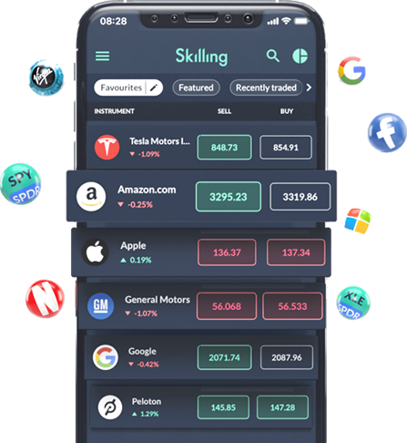
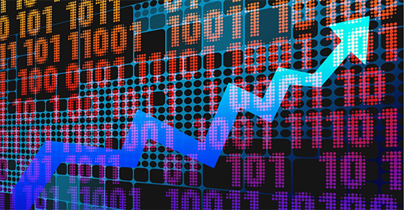

-
什么是股票？
股票是将公司所有权分割后的股份。拥有股票的人被称为股东。股份所有权给予股东分享公司资产和收益的权利（与所持 股份数量成正比）。股票通常在股票市场上交易。公司通过公开发行股票来筹集资金用于业务发展。另一方面，投资者试 图通过购买股票赚取收益并寻求投资多样化。随着股票价格的波动，公司价值上升或下降。
股票交易是指通过证券交易所或场外交易（OTC）买卖股票和其他证券，并支付相应的费用或佣金。个人投资者一般会委 托经纪人（如今通常是线上经纪人）代表他们执行交易。股票差价合约不同于常规股票，您并不拥有股票的实际所有权， 而是通过推测标的股价的未来走势进行投机的一种方式。因此，差价合约交易者不拥有股票所有权或投票权。差价合约和 股票交易都是利用金融市场的价格波动，两者都可以纳入您的多样化投资组合。
股票市场股票通常在证券交易所交易，交易所为买卖股票提供了一个市集。证券交易所跟踪每个公司股票的供求情况，并由此决定 股票的价格。以下是截至2019年5月世界最大的证券交易所及其市值列表：
纽约证券交易所——23.21万亿美元
纳斯达克证券交易所——11.22万亿美元
东京证券交易所——5.61万亿美元
上海证券交易所——5.01万亿美元
香港证券交易所——4.31万亿美元
泛欧交易所——4.27万亿美元
伦敦证券交易所——3.97万亿美元
深圳证券交易所——3.36万亿美元
多伦多证券交易所——2.22万亿美元
孟买证券交易所——2.18万亿美元
每一个交易所对上市公司都有着自己的要求，一般包括过去几年的股票数量、市值和收益等等。在选择上市的交易所时，公司需考虑一系列因素，例如：公司和交易所的地理位置；交易所类型；上市和合规成本；以及 需要遵循的会计政策等。股票在哪个交易所上市将影响到股票的交易时间。大多数交易所都有着固定的开盘和收盘时间， 并以当地时间为准。一些交易所还提供盘前和盘后交易。
股票交易中使用的重要术语年度报告——包括公司管理和财务状况信息的报告
要价——卖方希望出售其股票的价格
熊市——指股票市场处于下降期
出价——买方愿意为股票支付的价格
经纪人——代表您进行交易（买入或卖出）的证券商，并为此收取佣金
牛市——指股票市场处于上升期
股息——公司定期向股东支付的部分收益
财报——详细说明公司损益的季度报表
交易所——交易进行的场所
首次公开招股（IPO）——首次公开发行公司股票
流动性——表示可用于购买或出售股票的数量
投资组合——特定投资者拥有的资产集合
板块（Sector）——处于同一行业的一系列股票
价差——特定股票买入和卖出价格之间的差额
代码——市场中特定股票的缩写（通常为1至4个字符）
波动性——资产朝任何方向移动的速度。股票波动越大越快，它的波动性就越强、风险越大
交易量——在特定时间段内交易的公司股票数量 -
股票CFD交易
参与股票投资的方式有很多种，其中包括现金股票（Cash Equity）和衍生工具（如差价合约）。在过去的十年中，差价合 约（CFD）交易变得越来越受欢迎。股票CFD交易让客户无需实际拥有基础资产即可从不同股票的价格变动中获利。差价 合约是交易双方之间的合约，您的利润或亏损是您进入和退出交易价格之间的差额。因其价格派生自标的资产，因此被归 类为金融衍生工具。
差价合约因其低门槛和交易成本深受交易者的欢迎，这也吸引了交易者对股票投资的又一波关注。交易差价合约时，非常 重要的一点是选择信誉良好且受监管的提供商。可靠的提供商不仅能够保障定价和交易的透明，还提供多种客户资金保护 措施。此外，受监管的提供商还会披露相关的风险，并且禁止利用「快速致富」的噱头来诱导交易者。
股票交易 vs. 股票CFD交易差价合约允许您使用杠杆，这意味着您可以投入更少的资本获取更高的基础资产敞口。您的总敞口与保证金之比即为杠杆 比率。尽管您的初始投资额较低，但是总损益将按照全仓价值计算。因此，杠杆代表更高的风险和亏损。
与购买股票不同的是，差价合约交易者并不实际拥有基础资产。当持有股票时，交易者通常拥有如投票权和分享股息等其 他权利。差价合约为您提供在市场上升和下降期均可获利的机会——如果您预测价格将上涨，可以开立买入合约；如果预 测价格下跌，则可以开立卖出合约。
-
股票板块
在进行股票CFD交易之前，了解划分股票市场的经济行业板块将对您的投资有所帮助。这些板块构成了市场结构，同时由 于同一行业的走势通常相近，了解这些板块将帮助您深入了解影响一系列股票变动的原因以及何时可能发生价格波动。以 下是各股票板块的详细说明：
科技科技公司一般重点围绕软体、硬体或流程相关的技术。在过去的二十年中，科技股越来越受到投资者的欢迎。重要的是， 您应当知道科技板块往往由快速成长的公司组成，因此股票表现可能会非常不稳定。
金融金融股票包括如银行、保险经纪、支付处理公司、抵押贷款机构以及其他多种多样的公司。金融板块与经济息息相关，因 此它是参与市场总趋势投资的一种途径。由于其稳定的机制和严格的监管，金融股票往往不那么活跃，但是它们通常被认 为是稳健的公司和优质的长期投资标的。
能源通过交易能源板块的股票，您能够购买或出售能源企业的股份，例如提炼或生产重要商品（如原油、天然气和电力）的企 业。事实上，能源板块大多由大型石油公司主导，能源板块股票的表现一般与原油价格密切相关。股票总体表现相对平稳， 但是由于其对地缘政治事件的敏感性，有时可能会发生剧烈波动。
工业该板块由建筑、国防、机械、航天企业以及航空公司组成。这些公司的价值往往会随着军事/国防以及宏观经济变化而改变。
股票板块交易一般来说，您应当只投资您熟悉的板块或者您熟悉的公司股票。您可以从了解股票板块以及影响这些板块表现的因素开始。 一旦选定要投资的板块，您可以继续选择要交易的股票并对其进行详细调研。
了解和熟悉股票板块是选择交易股票的关键步骤。每个板块受不同因素的影响以不同的方式变动。不同板块也有不同的风 险等级、波动性、交易量和稳定性。因此，板块在不同的时间以不同的速度向上或者向下波动。您应当重点分析哪些板块 符合您的个人交易偏好和目标。然后，在选择特定公司股票之前，您应当进行更广泛的调研。
-
决定股价的因素有哪些？
一般来说，公司股票的价格一直在波动，并且受到公司的业绩和盈利能力、总体市场以及公众对公司的市场情绪等因素影 响
供应和需求
供求关系是决定股票价格的主要因素。顾名思义，供应是指具体股票的市场供应量，而需求是指市场对该股票的渴求程度。 低供给和高需求将推高股票价格，而高供给和低需求则会导致股票价格下跌。 当新闻和报告表明公司业绩良好或所在板块有望增长时，对公司股票的需求将增加，股价也会相应上涨。另一方面，负面 新闻和预测将导致需求下降。投资者购买股票的可能性降低，而出售股票的可能性上升，这反过来会增加市场的供应量并 最终压低股票价格。
股票供求受到一系列因素的影响。让我们来了解一下：
企业财务和绩效
上市公司必须定期发布报告，披露公司近期收入、目前现金流量和业绩预测等信息。这些报告以及报告发布后公司的后续 表现将影响公司股票的供求情况；良好的业绩将增加投资者对股票的需求，而糟糕的业绩将导致需求下降。股息公告也可 能影响股价。如果股息高于预期，股价往往会上涨，反之亦然。
管理层和内部关系也影响着投资者对公司的态度，并最终影响公司股票的价格。如果领导层能力强大且稳定，公司拥有良 好的社会责任政策，则通常认为该公司可能会持续增长并取得成功。 -
股市交易技巧
股票投资具有一定的挑战性，但是如果您懂得如何投资，则有机会获取丰厚的回报。您需要遵循一些基本原则，避免做出 不利的决定。以下是交易者在交易股票前应采取的一些步骤。
调研
无论是交易股票CFD还是在股票市场中买卖股票，股票交易的最重要原则是确保您做了必要的功课。您还可以通过该平台 交易股票CFD产品。在做出交易决策之前，您还应当了解近期新闻和市场走势。市场情绪可能会突然发生转变，为了能够 快速响应您需要一定的洞察力和直觉。这些能力可以通过随时掌握市场动态以及分析它们对市场的影响来练习。
不同的订单类型
您可以选择多种类型的交易订单，包括市价订单、未来订单（挂单）和止损单。当选择「市价单」时，您的交易将按照当 前市场价格执行。您还可以当标的工具达到指定价位时开立仓位，这被称为未来订单 （挂单）。此外，您可以选择手动平 仓或者下达止损单，系统将在到达设定的止损价时自动平仓。如果您设定 限价止盈（获利平仓），您的交易将以指定的价 格平仓，从而帮助您锁定利润。您还可以设定止损（亏损平仓），通过指定自动平仓价来避免更大的亏损。一旦达到或超 过指定价位（有时价格可能会「跳空」并超过指定点），将触发止损并按照第一个可用价格自动平仓。 由于滑点的存在，止损单将不被保证完全按照指定的价格平仓。
把握时机是关键
了解时机的重要性是股票成功交易的关键要素。 交易者应当详细了解希望交易股票的基本面情况、市场为何如此变动以及触发变动的因素。这样，您才能知道何时进入或 者退出交易。决定进入和退出交易的时机受多种因素的影响，包括您的整体交易策略、风险收益率、风险承受能力、工具 的波动性以及特定股票的任何新动向等。
坚持学习成长为交易者
交易者应当在交易股票之前充分利用各种可用的学习资源。您也可以使用我们的教育资源提高自己的专业水平。 无论是否新手，您都应当利用可用的资源坚持学习和提升。
从小额投资开始
在进入真实交易时，您应当尽可能最小化风险。这将帮助您逐步创建自己的交易策略，且避免重大资本损失。实际交易差 价合约时，您应始终牢记的黄金法则是：绝不进行超出您亏损承受范围的交易。
创建策略
交易策略是为了提高利润回报而实施的一系列计划，是成功交易的关键。
-
股票交易策略
在交易世界中，策略是提高您获利潜力的关键，也是降低风险的有效途径。优秀的股票交易策略将综合考虑您计划交易的 特定股票、市场状况以及公司和行业的所有相关信息。此外，您还应该确定自己的风险承受能力，并了解个人需求和偏好。 您应当谨慎创建策略并对其进行测试，以此控制投资风险。
以下是您交易差价合约时可能最常用的交易策略。您可以将这些策略与我们的股票交易技巧相结合，最终制定适合您个人 情况的策略。您创建的策略必须基于自己的偏好、可用的风险资本、风险承受能力、可用于交易的时间以及交易经验等。
日内交易
日内交易指在同一交易日开仓和平仓。它依赖于短期市场的走势，交易者必须对交易的股票及其所属的总体市场有着较深 入的了解。日内交易者需要根据新闻、财报、公关灾难或利率等多种因素来预测资产的价格走势。一般来说，特定公司发 生的任何事件都可能引起股票波动，为日内交易者提供获利的机会。此外，日内交易者需要了解总体市场以及影响其波动 的因素，并且掌握市场情绪变动。最后，日内交易要求快速决策和快速行动，因此交易者持续快速响应的能力也非常关键。 请牢记，日内交易需要持续的关注和大量的调研分析。您必须充分了解市场和要交易的股票，并且能够使用图表或分析工 具来辅助您的判断。如果您计划采用日内交易策略，请确保持续关注一系列知名的新闻来源，并且熟练掌握各种指标和图 表工具。
波段交易
波段交易是指交易者在相对较短的时间段内持有股票，并且在价格产生变化（波段）时卖出获利的策略。该策略基于技术 分析工具（例如图表和指标）来发现模式和趋势。通过识别价格波段，交易者将知道何时进入和退出交易，并利用价格波 段获利。如果您考虑使用波段交易策略，建议您选择交易量较大的股票，因为这些股票更容易出现价格波动。在波段交易 中，每笔交易的盈利空间通常较小，因此交易目标是通过多次交易获取较高的利润总额。